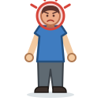

Unit 14
身體Body & Health
頭 手 腳 and the rest, what hurts (頭痛), seeing a doctor, 咗 for what's done (食咗藥), and 有冇: 你有冇發燒呀？
Learn
Body and health
Body parts, aches, fever and coughs, 睇醫生 and 食藥, 咗 and 未, 有冇, and how often to take medicine.
GameDoctor's Visit
Show where it hurts, answer the doctor's 有冇 and 食咗未 questions, and follow the prescription.
GameWrite It
Write 口, 耳 and 身 stroke by stroke with your finger: trace, then from memory, then 默書 from what you hear.
WritingWriting Sheet
Print a practice sheet: each character stroke by stroke in Hong Kong order, to trace and then write.

GameTone Detective
Hear a body word and pick its tones. 有 or 冇?
SpeakingSay It Back
Record yourself and compare your tones with a native speaker's pitch curve.